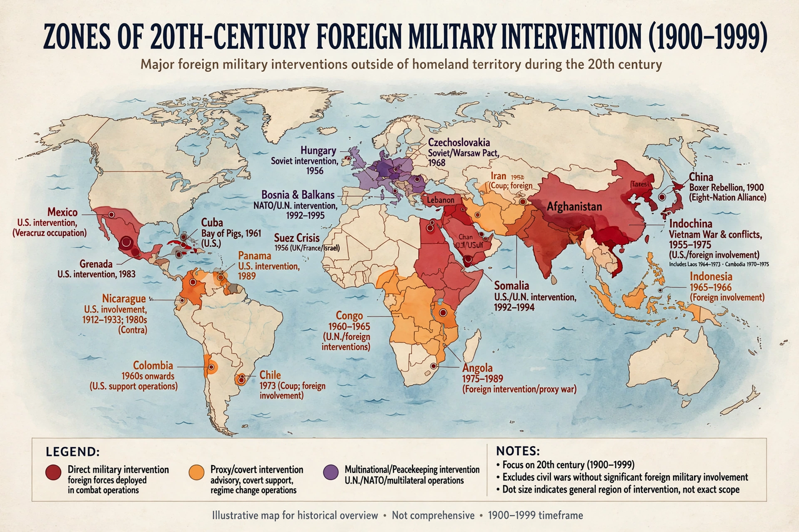

Interventionism, in international relations, is the policy or practice of a state intervening in the affairs of another state, typically by military force, economic pressure, or covert action. It is contrasted with isolationism and with the principle of non-intervention, which is enshrined in Article 2 of the United Nations Charter but qualified by the Security Council's authority to act against threats to the peace.
Interventions range from humanitarian intervention, intended to prevent mass atrocities; to peacekeeping operations conducted with international authorisation (see Blue Helmet); to interventions supporting one side in a civil war, enforcing no-fly zones, or compelling disarmament. Economic and covert interventions — sanctions, embargoes, and clandestine support for friendly factions — fall under broader definitions.
Great powers have intervened throughout history, but the practice became a central controversy after the Cold War, with operations in Somalia, the Balkans, and elsewhere. The 1999 NATO intervention in Kosovo, conducted without explicit Security Council authorisation, and the 2003 invasion of Iraq intensified debate. In 2005 the UN World Summit endorsed the "responsibility to protect" (R2P) doctrine, under which sovereignty does not shield governments committing mass atrocities from international action.
Supporters argue intervention can prevent genocide and protect civilians; critics argue it is applied selectively, violates sovereignty, often worsens conflicts, and may serve the intervening power's interests. Libertarian economists also use "interventionism" for domestic government interference in markets, a distinct sense associated with Ludwig von Mises.
See also: Humanitarian intervention · Responsibility to protect · Isolationism